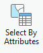
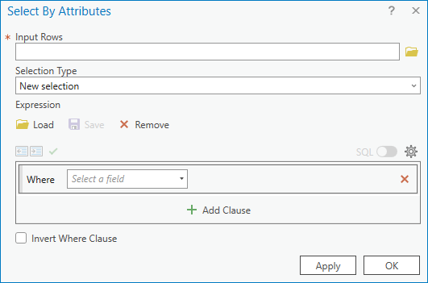
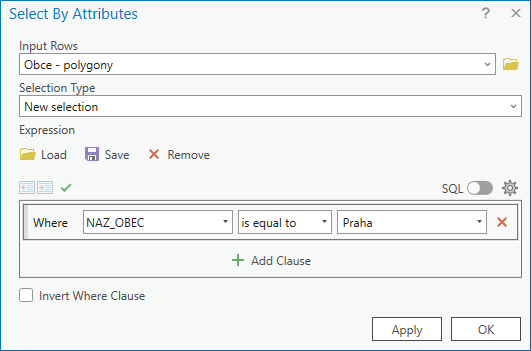

Vector data, attribute queries, spatial queries
Basic terms
Vector and raster spatial data
Formed by vertices and paths - these are determined by actual coordinates.
The detail is determined by the detail of the vertex coordinates.
Suitable for discretely distributed data (e.g. point locations, land cover categories)
Possible topology problems (gaps and overlaps)
Formed by a regular grid of pixels – these are determined by pixel coordinates (row/column)
Detail is determined by pixel size (in meters)
Suitable for phenomena changing both continuously (e.g. terrain model, air pollution) and discretely, as well as image data (e.g. satellite)
Contents
Attribute queries
Attribute Query is a method of selecting/filtering elements based on attribute values. It complements the interactive feature selection method from practical 1. The basis is a selection rule - called Expression. ArcGIS Pro allows you to build expressions interactively using a dialog, but to use the full potential of expressions, it is recommended to use SQL code.
Attribute query (over map data): Map → Select By Attributes → fill in the dialog... Select features using attributes
  

{kind=link}
{kind=link}
{kind=link}
The Input Rows field is automatically prepopulated with the layer selected in the map content
Using the you can change the notation between the interactive dialog entry and the SQL expression.
Example to trytesting attribute queries on real data
| attribute | data type | description |
|---|---|---|
| FEATURECLA | String |
Populated places classification |
| NAME | String |
Name of the populated place |
| WORLDCITY | Integer |
Whether the place is classified as a World city, 0=no, 1=yes |
| MEGACITY | Integer |
Whether the place is classified as a Mega city, 0=no, 1=yes |
| SOV0NAME | String |
Name of the sovereign country |
| ADM0NAME | String |
Name of the admin country |
| ADM1NAME | String |
Name of the First-level administrative devision in a country |
| LATITUDE | Double |
Latitude |
| LONGITUDE | Double |
Longitude |
| POP_MAX | Double |
Estimate of inhabitants of the place with urban agglomeration |
| POP_MIN | Double |
Estimate of inhabitants of the place without urban agglomeration |
| TIMEZONE | String |
Name of the timezone |
Spatial queries
Spatial Query is a method of selecting/filtering elements of one layer based on their relative position with elements of another layer. The function uses as input the layer of selected elements, the layer for overlay analysis a the relationship for overlay analysis.


| Intersect | A |
| Intersect (DBMS) | A |
| Contains | A |
| Contains Clementini | A |
| Within | A |
| Within Clementini | A |
| Are identical to | A |
| Have their center in | A |

| Intersect | A, C |
| Intersect (DBMS) | A, C |
| Within | A, C |
| Completely within | A |
| Within Clementini | A |
| Have their center in | A, C |
| Boundary touches | C |

| Intersect | A, C |
| Intersect (DBMS) | A, C |
| Within | A, C |
| Completely within | A |
| Within Clementini | A |
| Have their center in | A, C |
| Boundary touches | C |

| Intersect | A, C, D |
| Intersect (DBMS) | A, C, D |
| Contains | A, C, D |
| Completely contains | A, D |
| Contains Clementini | A, D |
| Have their center in | D |
| Boundary touches | C |

| Intersect | A, C, D, E, F, G, H, I, J |
| Intersect (DBMS) | A, C, D, E, F, G, H, I, J |
| Contains | G, H |
| Completely contains | G |
| Contains Clementini | G, H |
| Within | F, H |
| Completely within | F |
| Within Clementini | F, H |
| Are identical to | H |
| Boundary touches | C, E |
| Share a line segment with | F, G, H, I, J |

| Intersect | A, C, D, E, F, G, H, I, J, K, L, M, N, O |
| Intersect (DBMS) | A, C, D, E, F, G, H, I, J, K, L, M, N, O |
| Within | A, D, G, H, I, O |
| Completely within | A |
| Within Clementini | A, D, G, H, I |
| Boundary touches | F, G, H, I, K, L, M, N, O |
| Share a line segment with | G, I, J, K, M, O |
| Crossed by the outline of | C, E, H, L, N |
| Have their center in | A, C, D, E, G, H, I, J, O |

| Intersect | A, B |
| Intersect (DBMS) | A, B |
| Contains | A, B |
| Completely contains | A |
| Contains Clementini | A |
| Have their center in | A, D |
| Boundary touches | B |

| Intersect | A, C, D, E, F, G, H, I, J, K, L, M, N, O |
| Intersect (DBMS) | A, C, D, E, F, G, H, I, J, K, L, M, N, O |
| Contains | A, D, G, H, I, O |
| Completely contains | A |
| Contains Clementini | A, D, G, H, I |
| Boundary touches | F, G, H, I, K, L, M, N, O |
| Share a line segment with | G, I, J, K, M, O |
| Crossed by the outline of | C, E, H, L, N |
| Have their center in | E, I, L |

| Intersect | A, C, D, E, F, G, H, I, J, K, M |
| Intersect (DBMS) | A, C, D, E, F, G, H, I, J, K, M |
| Contains | C, E, H, M |
| Completely contains | C |
| Contains Clementini | C, E, H, M |
| Within | F, G, H, M |
| Completely within | F |
| Within Clementini | F, G, H, M |
| Are identical to | H, M |
| Boundary touches | D, E, G, H, I, J, M |
| Share a line segment with | D, H, I, M |
| Crossed by the outline of | A, E, G, J, K |
| Have their center in | C, E, F, G, H, K, L |
Select features by location Select Layer By Location (Data Management) Select By Location graphic examples